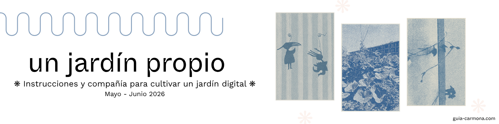

En 2020 empecé un blog llamado Un buen plan, donde durante tres años publiqué cada domingo sobre un tema concreto. Lo cerré en 2023, no porque me quedara sin ideas, sino porque el formato se había vuelto una jaula: cada entrada tenía que estar terminada, cerrada, lista, y yo quería explorar cosas que todavía no tenía resueltas, escribir sobre lo que estaba pensando y no solo sobre lo que ya había pensado.
Si me lees desde entonces: ¡👋 Hola y gracias por seguir aquí!
Después intenté con Substack, pero nunca terminé de encajar con la plataforma. Y cuando descubrí el concepto de jardín digital supe que era la siguiente aventura: un espacio que no me pidiera entradas cerradas ni compromisos semanales, sino que me dejara explorar estando todo en proceso, y en público.
Al crear mi jardín digital he descubierto que escribir en público pero de forma inacabada cambia cómo piensas. Es por la posibilidad de ser leída: eso ya te obliga a llevar el pensamiento un paso más allá de donde lo dejarías en privado.
Este curso es la invitación a construir ese espacio. Tuyo, independiente y sostenible.
Qué es un jardín digital
Un jardín digital no es un blog. No necesitas entradas fechadas ni temas resueltos. Es un espacio vivo donde las ideas crecen, se cruzan y cambian de forma con el tiempo. Algunas notas están desarrolladas, otras son solo apuntes. Eso no es un defecto, es la lógica del jardín.
Si quieres ver uno por dentro, puedes pasear por el mío: guia-carmona.com/es/digitalgarden/. Está en sus primeros pasos, pero ya en funcionamiento. Que es justo lo que importa. Y si quieres ver más ejemplos, aquí tienes una colección de jardines que me inspiran.
Lo que este curso no es
Este no es un curso de diseño web ni de branding. Tu jardín tendrá una tipografía limpia y funcional, daré unas pautas en cuanto a esto, pero aquí no hacemos moodboards ni definimos paletas de color. Lo que hace que valga la pena un jardín es lo que crece en él.
Tampoco es un curso para aprender a programar. No vas a tocar código. La parte técnica se la dejamos a la IA, te cuento cómo justo abajo.
El setup técnico
En este curso construimos el jardín con GitHub Pages y Claude Code. GitHub Pages es una forma gratuita de publicar tu jardín en internet, en tu propio dominio, sin depender de ninguna plataforma. Claude Code es la herramienta que nos ayuda con la parte técnica: construir y mantener el jardín sin necesidad de saber programar. La escritura es tuya, aunque si en algún momento quieres usar la IA también para eso, nadie te lo impide y lo hablaremos en el curso.
Para usar Claude Code necesitas una suscripción a Claude Pro (20€/mes). Si ya tienes cuenta en Claude, comprueba que tienes el plan Pro activo. GitHub es gratuito y no necesitas ninguna suscripción de pago.
Para publicar el jardín necesitas un dominio propio, que puedes comprar por unos 10-15€/año en cualquier registro de dominio de confianza. Si todavía no tienes uno, no pasa nada: durante el curso puedes publicar directamente en GitHub Pages con una dirección del tipo tunombre.github.io, completamente gratuita, y conectar tu dominio propio cuando quieras.
Si ya tienes una página web o prefieres otro sistema, puedes trabajar desde ahí, pero el soporte técnico del curso cubre únicamente GitHub Pages y Claude Code.
Cómo funciona
Cada semana hay una sesión en vivo de una hora con una parte de input y ejercicios según el tema, y espacio para preguntas y respuestas. Entre sesiones, material escrito o vídeo(s) para trabajar a tu ritmo, y un grupo en Slack donde compartir avances, preguntas y nuestros jardines en proceso.
No tienes que venir siempre a las sesiones en directo, las grabaré todas.
Las sesiones en vivo tienen horarios variados para adaptarse a diferentes rutinas. Los horarios concretos los encontrarás aquí.
Semana a semana
Siete semanas, del 12 de mayo al 27 de junio.
- Semana 1 — Qué es un jardín digital: intenciones, primeras decisiones y primeros pasos técnicos
- Semana 2 — Configuración: tu jardín publicado y funcionando
- Semana 3 — Las primeras notas: cómo escribir para un jardín y soltar las primeras ideas al mundo
- Semana 4 — Estructura y navegación: cómo organizar un jardín que pueda crecer sin volverse un caos
- Semana 5 — Otras formas de tratar el conocimiento: mapas, cartas e invitaciones
- Semana 6 — Protocolos de memoria y vasijas de conocimiento: qué guardamos, en qué forma y por qué importa
- Semana 7 — Cierre y cultivo: cómo mantener el jardín vivo mucho más allá del curso
Sesiones en vivo
- Semana 1 — viernes 15 mayo, 11:30-12:30
- Semana 2 — martes 20 mayo, 20:00-21:00
- Semana 3 — viernes 29 mayo, 11:30-12:30
- Semana 4 — martes 3 junio, 21:00-22:00
- Semana 5 — jueves 11 junio, 20:00-21:00
- Semana 6 — viernes 19 junio, 11:30-12:30
- Semana 7 — jueves 26 junio, 20:00-21:00
Para quién es este curso
Para personas con ideas en proceso que quieren un espacio propio donde publicarlas. No necesitas saber programar. No necesitas haber tenido un blog antes. Necesitas haber usado alguna herramienta de IA como Claude o ChatGPT, tener ganas de escribir en público, y querer un espacio que sea verdaderamente tuyo.
Quién te acompaña durante el curso
Soy Guía Carmona, traductora y escritora especializada en gestión del conocimiento. Llevo años acompañando a personas y organizaciones a construir prácticas sostenibles para trabajar con ideas. Tengo mi propio jardín digital en funcionamiento (desde hace poquito!) y quiero enseñarte todo lo que he aprendido para que empieces a cultivar el tuyo.
Precio e inscripción
297€ en dos pagos automáticos de 148,50€/mes.
Incluye las siete sesiones en vivo, las grabaciones, el material entre sesiones, el grupo de Slack y acompañamiento directo conmigo.
Grupo reducido. Inscripciones abiertas hasta el 11 de mayo o hasta completar el grupo.
Si tienes preguntas, escríbeme a hola@soyguiacarmona.com y te contesto cuanto antes.
Preguntas frecuentes
¿Necesito saber programar?
No. Claude Code hace la parte técnica contigo: le describes lo que quieres y te ayuda a construirlo. Si alguna vez has usado Claude o ChatGPT para algo, tienes suficiente base. En el curso explico paso a paso cómo hacer todo esto. Lo que sí necesitas es paciencia con la tecnología, porque a veces las cosas no funcionan a la primera y eso también forma parte del proceso.
¿Qué pasa si no puedo asistir a alguna sesión en vivo?
Todas las sesiones se graban y las tendrás disponibles. Puedes seguir el curso a tu ritmo y participar en Slack cuando puedas. Dicho esto, las sesiones en vivo son donde pasan las cosas más interesantes: las preguntas de otras personas, los problemas que no habías anticipado, las conversaciones que no estaban en el programa. Si puedes estar, merece la pena.
¿Cuánto tiempo necesito cada semana?
Entre dos y cuatro horas: la sesión en vivo más el tiempo para trabajar en tu jardín. Algunas semanas serán más intensas que otras, especialmente la segunda, cuando configuramos todo el setup técnico. Si una semana no llegas, no pasa nada. El jardín sigue ahí cuando vuelvas.
¿Qué necesito para empezar?
Un ordenador, una cuenta en GitHub (gratuita — en el curso explico exactamente cómo crearla), una suscripción a Claude Pro (20€/mes) y ganas de escribir en público. Si todavía no tienes dominio propio, puedes empezar con una dirección gratuita de GitHub Pages y conectar el dominio más adelante.
¿El jardín que cree será mío?
El contenido es completamente tuyo. Vive en tu propia cuenta de GitHub como un repositorio git estándar que puedes descargar y mover a donde quieras. Si mañana GitHub desapareciera, el hosting caería, pero tus archivos seguirían ahí y podrías publicarlos en otro sitio (Netlify, Vercel, tu propio servidor) sin perder nada. Eso es lo que lo diferencia de Substack o Notion: no dependes de que la plataforma decida qué hacer con tu contenido.
¿Qué pasa después del curso?
Te quedas con tu jardín publicado y con una práctica para seguir cultivándolo. Lo más importante que te llevas no es la plataforma, sino el hábito y las herramientas para seguir adelante.
¿Cómo puedo pagar?
El precio es 297€, dividido en dos pagos automáticos de 148,50€/mes.
¿Cuál es la política de devolución?
Si después de la primera sesión sientes que el curso no es lo que esperabas, te devuelvo el importe completo. Pasada la segunda sesión, no hay devolución.
¿Hay plazas limitadas?
Sí, es un grupo reducido para que haya acompañamiento real. Cuando se llene, se llena.
¿Para quién no es este curso?
Para quien busca una web profesional impoluta desde el día uno. Para quien quiere resultados sin proceso. Para quien no tiene ningún interés en escribir en público. Si no estás seguro de si es para ti, escríbeme y lo vemos juntos.